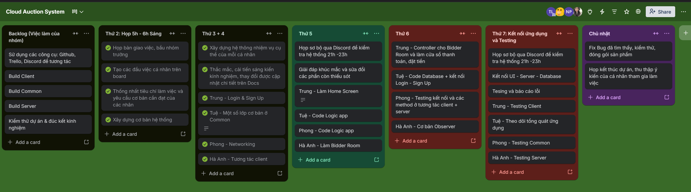
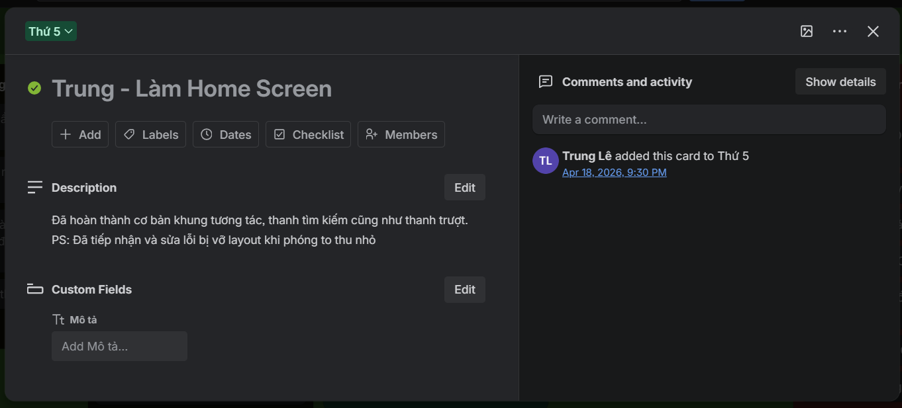
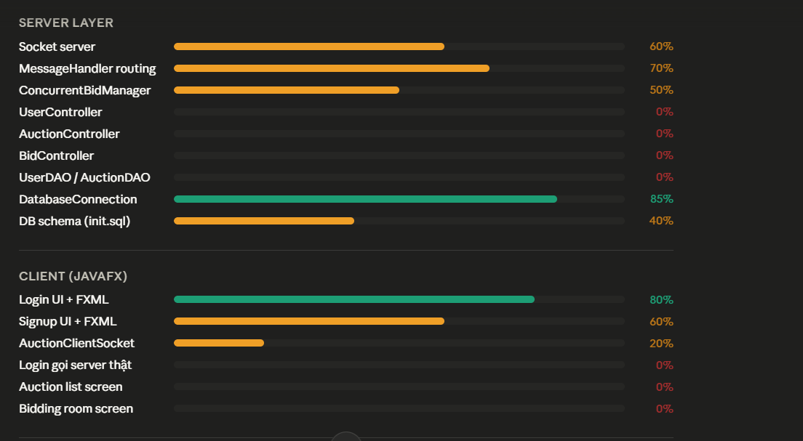
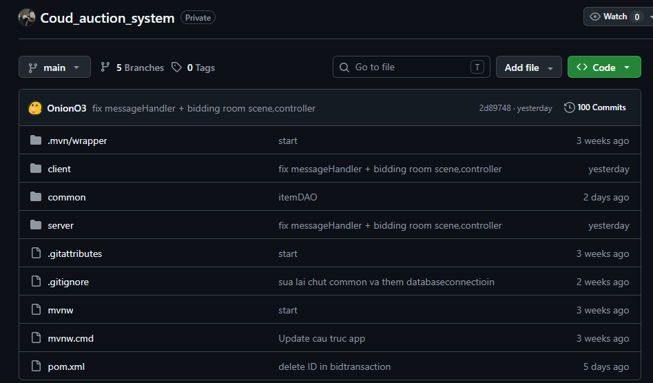
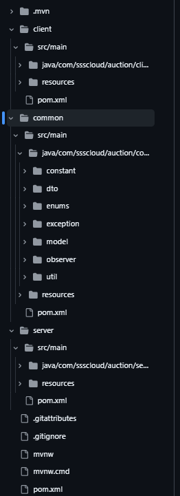
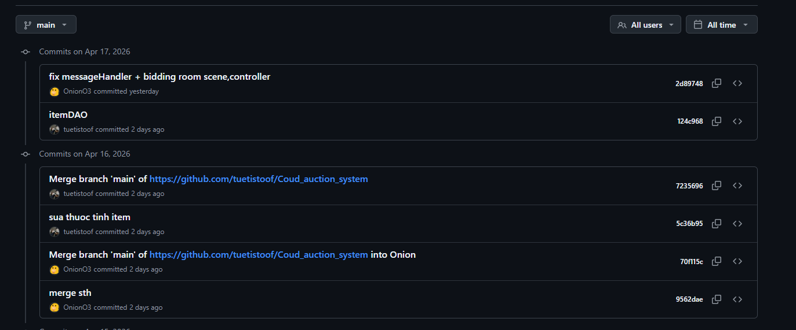
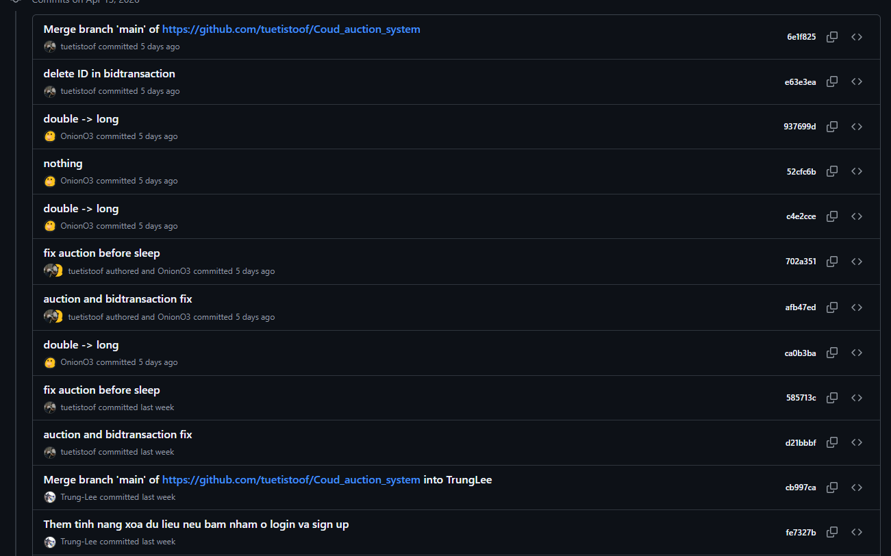
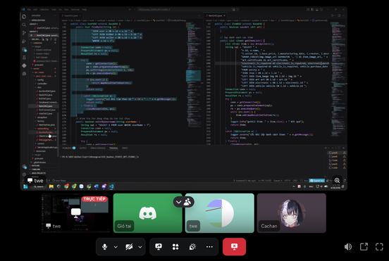
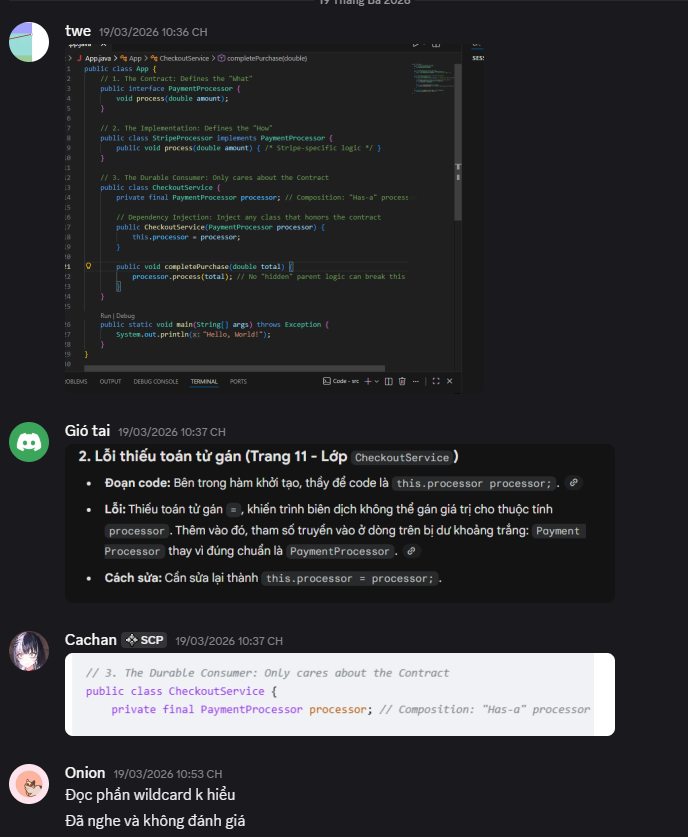
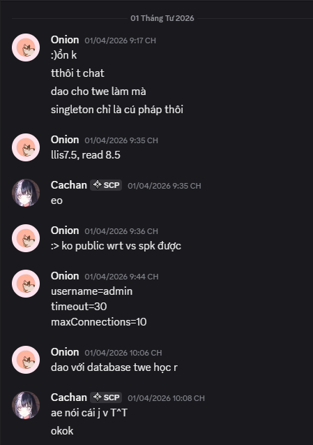

BÁO CÁO CÁ NHÂN
Về việc sử dụng công cụ hợp tác trực tuyến trong dự án nhóm
Người thực hiện: Lê Tuấn Trung
Phạm vi minh chứng: 01 tuần làm việc nhóm trực tuyến
Nhóm công cụ sử dụng: Trello, Github, Discord
Mục tiêu cá nhân trong tuần minh chứng là quản lý 100% nhiệm vụ được giao bằng công cụ số, cập nhật tiến độ thường xuyên, chủ động tương tác hỗ trợ thành viên khác, đồng thời xây dựng một hệ thống tài liệu rõ cấu trúc, rõ quyền truy cập và dễ truy vết. Báo cáo này tập trung vào vai trò, thao tác và hiệu quả làm việc của cá nhân thay vì mô tả sản phẩm nhóm một cách dàn trải.
1. Bối cảnh dự án và vai trò cá nhân
Trong tuần minh chứng, nhóm tôi thực hiện một dự án nhỏ theo hình thức cộng tác trực tuyến. Sản phẩm của nhóm mình cần làm là một hệ thống đấu giá trực tuyến. Do lịch học và thời gian rảnh của các thành viên không trùng nhau, phần lớn hoạt động phân công, chỉnh sửa, góp ý và nhắc tiến độ đều diễn ra trên môi trường số.
Trong bối cảnh đó, vai trò cá nhân của tôi là quản lý các nhiệm vụ được giao, theo dõi tiến độ thực hiện, trực tiếp đóng góp nội dung vào tài liệu chung, chuẩn hóa kho tệp làm việc và duy trì nhịp trao đổi với nhóm. Tôi xem đây không chỉ là việc hoàn thành phần việc của mình mà còn là quá trình rèn thói quen làm việc có hệ thống, có dấu vết thao tác và có khả năng phối hợp từ xa một cách chủ động.
Để tạo một quy trình làm việc khép kín, tôi lựa chọn đồng thời bốn công cụ ở bốn nhóm chức năng khác nhau: Trello để quản lý tác vụ, Github để lưu trữ và chia sẻ tệp, Discord để giao tiếp nhóm. Việc phân vai rõ ràng cho từng công cụ giúp giảm nhầm lẫn, hạn chế thất lạc phiên bản và tạo ra hệ thống minh chứng đủ rõ để đối chiếu với rubric đánh giá.

2. Hệ công cụ hợp tác trực tuyến đã thiết lập và cách tối ưu sử dụng
Bảng 1. Hệ công cụ sử dụng trong báo cáo cá nhân
| Công cụ |
Nhóm chức năng |
Thiết lập / tối ưu |
Vai trò đối với công việc cá nhân |
| Trello | Quản lý dự án | Tạo board theo các cột Backlog - To do - Doing - Review - Done; dùng label mức độ ưu tiên, checklist công việc, deadline và gắn link tài liệu liên quan. | Theo dõi toàn bộ nhiệm vụ cá nhân, nhìn rõ trạng thái từng việc và cập nhật tiến độ theo mốc cụ thể. |
| Github | Lưu trữ và chia sẻ | Tổ chức thư mục nhiều cấp; đặt quy tắc tên file thống nhất; phân cấp rõ ràng theo mục đích sử dụng cua từng thư mục | Lưu trữ tập trung, tránh thất lạc dữ liệu và giảm tình trạng nhiều phiên bản trùng lặp trên máy cá nhân. |
| Discord | Giao tiếp nhóm | Tạo kênh trao đổi luôn trong trạng thái hoạt động và có thể ra vào một cách tùy ý giúp linh hoạt trong các công tác hoạt động | Duy trì nhịp tương tác, xử lý vướng mắc nhanh và hỗ trợ thành viên khác ngay trong dòng công việc chung. |

Ngay từ đầu, tôi thống nhất dùng họ tên thật trên các nền tảng, cập nhật hồ sơ cá nhân rõ ràng và gắn liên kết chéo giữa các công cụ. Nhờ vậy, mỗi tác vụ trên Trello đều có thể dẫn tới tài liệu tương ứng trên Github, mọi thay đổi của hệ thống đều được ghi lại qua commit của Github, bên cạnh đó mọi người có thể có nhưng cuộc bàn luận ngắn gọn trong các kênh trao đổi trên Discord.

3. Nhật ký triển khai trong 01 tuần
Bảng 2. Nhật ký các hoạt động cá nhân trong tuần minh chứng
| Thời điểm |
Công cụ chính |
Hoạt động cá nhân |
Kết quả đạt được |
| Ngày 1 | Trello, Docs, Discord | Tham gia không gian làm việc chung; hoàn thiện tên hiển thị cá nhân; nhận danh sách nhiệm vụ và tạo các đầu việc cá nhân trên board. | Có hồ sơ rõ danh tính; 100% nhiệm vụ được ghi nhận lên hệ thống ngay từ đầu. |
| Ngày 2 đến ngày 4 | Trello, Github, Docs | Xây dựng hệ thống theo nhiệm vụ cụ thể của mỗi cá nhận, các thắc mắc, cải tiến, sáng kiến, kinh nghiệm, thay đổi được cập nhật rõ ràng chi tiết từng phần trên Docs | Tiến độ được minh bạch; nhóm nắm rõ ai đang phụ trách hạng mục nào. Kho tệp gọn, dễ tìm; hạn chế nhầm phiên bản và tránh chỉnh sửa nhầm vào. |
| Ngày 5 đến ngày 6 | Trello, Github, Docs, Discord | Kiểm tra sơ bộ hệ thống một lượt sau đó trao đối trực tiếp qua Discord để giải quyết nhanh các khúc mắc và sửa đổi các phần còn thiếu sót để hoàn thiện hệ thống | Tăng tính chủ động trong tương tác; đảm bảo hệ thống hoàn thiện mốt cách tốt nhất và đúng tiến độ. |
| Cuối tuần | Toàn bộ hệ công cụ | Rà soát lần cuối, chốt trạng thái công việc, lưu minh chứng cá nhân và chuẩn bị file nộp. | Hoàn thành chuỗi làm việc có thể truy vết từ nhiệm vụ, tài liệu, tệp đến trao đổi nhóm. |

Bảng 3. Tổng hợp chỉ số công việc cá nhân trong tuần
| Chỉ số |
Kết quả |
Ý nghĩa đối với rubric |
| Số công cụ sử dụng | 03 công cụ / 03 nhóm chức năng | Đáp ứng yêu cầu tối thiểu là 03 công cụ thuộc các nhóm khác nhau. |
| Nhiệm vụ cá nhân có deadline | Hoàn thành tất cả các nhiệm vụ | Bảo đảm mọi đầu việc cá nhân đều được mô tả rõ và có thời hạn cụ thể. |
| Lần cập nhật tiến độ | 07 lần / tuần | Vượt mốc tối thiểu 03 lần cập nhật tiến độ trong tuần. |
| Lượt tương tác hỗ trợ nhóm | 23 lượt / tuần | Đạt mức chủ động tương tác trên 10 lượt theo yêu cầu mức cao. |
| Tình trạng hệ thống | Hoàn thiện tốt | Đáp ứng tiêu chí quản lý tài nguyên và tệp tin ở mức cao. |

4. Quản lý tác vụ và tương tác cá nhân
Trong hệ thống công việc của tôi, Trello đóng vai trò là "trục xương sống" cho toàn bộ tiến độ cá nhân. Thay vì chỉ nhớ việc bằng tin nhắn hoặc ghi chú rời rạc, tôi tách mỗi nhiệm vụ thành một card riêng, mô tả mục tiêu, người phụ trách, deadline, mức ưu tiên và checklist các bước nhỏ. Cách làm này khiến công việc trở nên đo được: tôi biết chính xác việc nào đã xong, việc nào đang chậm và việc nào cần phối hợp thêm với thành viên khác.


Bảng 4. Danh sách nhiệm vụ cá nhân được theo dõi trên Trello
| Nhiệm vụ |
Công cụ theo dõi |
Deadline |
Trạng thái cuối tuần |
| Tổng hợp yêu cầu đề bài và rubric | Trello + Discord | Đầu tuần | Hoàn thành |
| Xây dựng hệ thống | Trello + Github + Discord | Ngày 2 đến ngày 4 | Hoàn thành |
| Kiểm tra sơ bộ hệ thống thống kê công việc còn lại, giải quyết các vấn đề còn thiết sót của mỗi cá nhân | Trello + Github + Discord | Ngày 5 | Hoàn thành |
| Hoàn thiện hệ thống kiểm tra lại tổng quát lần cuối | Trello + Github + Discord | Cuối tuần | Hoàn thành |
Github đóng vai trò quan trọng trong việc quản lí các tệp tin hệ thống tránh làm mất những file đã làm tốt chỉ lọc các commit có thay đổi giúp các file đã hoàn thiện không bị ảnh hưởng, bên cạnh đó việc giao tiếp nhanh chóng và dễ dàng qua Discord, Messenger giúp mọi người chủ động hơn trong mọi tình huống bất ngờ xảy ra đối với hệ thống nhằm kiểm soát mọi rủi ro do việc sửa dổi cũng như nhanh chóng giải quyết các khúc mắc.

5. Quản lý tài nguyên và tệp tin
Nếu Trello giúp nhìn rõ việc phải làm thì Github giúp tôi kiểm soát "nguồn sự thật duy nhất" của tài liệu nhóm. Ngay trong tuần minh chứng, tôi sắp xếp lại toàn bộ thư mục theo logic nhiều cấp, tách rõ nơi lưu đề bài, kế hoạch, tài liệu đang làm, sản phẩm cuối và minh chứng cá nhân. Cách phân tầng này giúp mỗi thành viên biết cần vào đâu để tìm đúng tệp, đồng thời hạn chế tối đa việc lưu file trùng lặp ở nhiều vị trí khác nhau.

6. Đánh giá hiệu quả của từng công cụ đối với công việc cá nhân
6.1. Trello
Trello hiệu quả nhất ở khả năng trực quan hóa công việc. Chỉ cần nhìn board, tôi biết ngay lượng việc còn tồn, mức ưu tiên và trạng thái hiện tại của từng đầu việc. Đối với cá nhân, ưu điểm lớn nhất là hình thành thói quen làm việc theo nhiệm vụ có deadline chứ không làm theo cảm tính. Bên cạnh đó, việc gắn link tài liệu liên quan vào từng card còn giúp tiết kiệm đáng kể thời gian tìm kiếm.
6.2. Github
GitHub hỗ trợ quản lý phiên bản và theo dõi tiến độ công việc một cách rõ ràng, đặc biệt phù hợp khi làm việc nhóm trên các tài liệu hoặc dự án có nhiều thay đổi. Đối với cá nhân, hiệu quả lớn nhất là khả năng lưu lại lịch sử chỉnh sửa chi tiết, giúp tôi dễ dàng kiểm soát nội dung đã thực hiện cũng như khôi phục khi cần thiết. Ngoài ra, việc sử dụng commit message giúp tôi rèn luyện thói quen ghi chú công việc rõ ràng và có hệ thống. GitHub không chỉ là nơi lưu trữ mà còn giúp nâng cao tính kỷ luật và minh bạch trong quá trình làm việc.
6.3. Discord
Discord là công cụ giao tiếp linh hoạt, hỗ trợ trao đổi thông tin nhanh chóng giữa các thành viên trong nhóm. Đối với cá nhân, Discord giúp tôi chủ động hơn trong việc cập nhật tiến độ và phản hồi ý kiến của các thành viên khác. Việc trao đổi thông qua các kênh chat riêng biệt giúp nội dung thảo luận được phân loại rõ ràng, tránh bị trôi thông tin quan trọng. Bên cạnh đó, khả năng gửi file, hình ảnh và tạo cuộc gọi nhóm giúp việc phối hợp công việc trở nên thuận tiện hơn. Nhờ đó, tôi có thể duy trì sự kết nối liên tục với nhóm và nâng cao hiệu quả làm việc chung.

7. Ba thách thức trong quá trình tương tác nhóm và cách giải quyết
Ba thách thức nổi bật nhất trong quá trình phối hợp nhóm và cách tôi xử lý được tóm tắt dưới đây.
Bảng 6. Phân tích 03 thách thức và 03 giải pháp cá nhân
| Thách thức |
Biểu hiện và tác động |
Giải pháp cá nhân và kết quả |
| 1. Lệch nhịp cập nhật tiến độ | Thành viên online lệch giờ nên dễ xuất hiện khoảng trống thông tin; khó biết việc nào đã xong. | Tôi đưa mọi đầu việc lên Trello, cập nhật theo mốc cố định và dùng Teams báo thay đổi quan trọng. Kết quả: tiến độ minh bạch hơn, giảm tình trạng hỏi lại. |
| 2. Chồng chéo khi cùng sửa tài liệu | Khi nhiều người cùng chỉnh một nội dung, tài liệu dễ bị sửa đè hoặc mất ý nếu không phân vùng trách nhiệm. | Github là công cụ hiệu quả trong việt cập nhật và sửa đổi hệ thống nó sẽ cảnh bảo khi chỉnh sửa bị trồng chéo để các thành viên có thể nhanh chóng hủy việc chỉnh sửa bằng việc quay lại các commit cũ. Không những thế công việc trong nhóm được phân chia rất rõ ràng để đám bảo không có sự trồng chéo xảy ra |
| 3. Nhầm phiên bản và thất lạc tệp | Việc lưu file ở nhiều nơi hoặc đặt tên tùy tiện khiến tìm tài liệu chậm và tăng nguy cơ nộp nhầm file. | Github là công cụ vô cùng tốt vì các thao tác đơn giản và nó được duy trì như một thói quen khiến việc thất lạc tài liệu rất hiến khi xảy ra nhưng không vì thế mà chúng tôi hay cá nhân tôi có quyền mất tập trung trong việc kiểm soát tài liệu. |
Qua ba tình huống trên, tôi rút ra rằng hiệu quả phối hợp nhóm đến từ việc gán cho mỗi công cụ một chức năng rõ ràng và duy trì kỷ luật cập nhật.